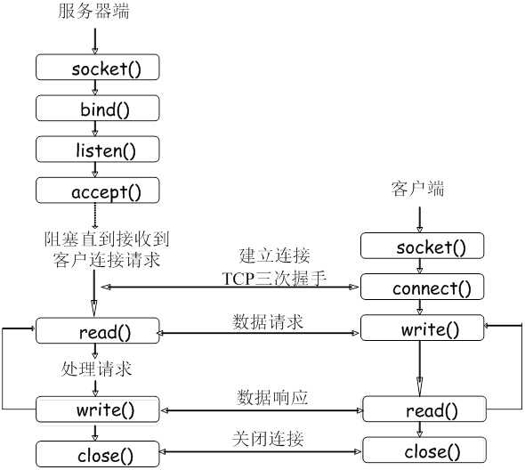
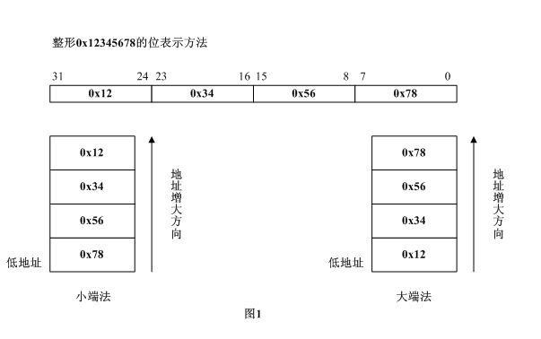

基于 TCP 的字符串传输程序
Linux中的网络编程是通过SOCKET接口来进行的。
Socket（套接字）
Socket相当于进行网络通信两端的插座，只要对方的Socket和自己的Socket有通信联接，双方就可以发送和接收数据了。Socket的定义类似于文件句柄的定义。下面的流程图大概描述了基于TCP协议的网络编程过程。同学们只需要对大概流程有一个初步认识即可，暂时不必深究每个函数的意义。因为在后面的实训子任务中，每一个函数的具体内容和使用方法都会讲到。
TCP协议socket流程图

基本套接字调用顺序如下：
创建套接字--socket()-->绑定本机端口--bind();-->建立连接--connect(),accept();-->侦听端口--listen();-->数据传输--send(),recv();-->输入/输出多路复用--select();-->关闭套接字--closesocket();
其中，服务器端基于TCP的编程步骤大致如下：
① 创建套接字；
建立服务器端的socket套接字：int socket(int domain，int type，int protocol)
②绑定套接字到一个IP地址和一个端口上
int bind(int sockfd,struct sockaddr * myaddr,int addrlen)；
③将套接字设置为监听模式，以等待连接请求
int listen(int sockfd，int backlog)
④请求到来后，接受连接请求，并返回一个与此次连接对应的套接字
int accept(int sockfd，struct sockaddr * addr，int * addrlen)
此时新建连接，并创建新的Socket套接字，此时addr为客户端的addr信息。
⑤用返回的套接字和客户端进行通信
使用recv()和send()
⑥关闭服务器端的套接字描述符
int close(int sockfd)；
客户端调用顺序如下：
①创建客户端套接字
int socket(int domain，int type，int protocol)
②向服务器发出连接请求
int connect（int sockfd，struct sockaddr * servaddr，int addrlen）
其中参数servaddr指定远程服务器的套接字地址，包括服务器的IP地址和端口号
③和服务器端进行网络通信
使用recv()和send()
int read(int fd，char * buf，int len)
int write(int fd，char * buf，int len)
④关闭套接字
int close(int sockfd)；
1.网络字节序和本地字节序相互转换
任务要求：
- 打印本地字节序
- 用htonl函数把本地字节序转换成网络字节序，并打印
相关知识：
- 小端法(Little-Endian)就是低位字节排放在内存的低地址端即该值的起始地址，高位字节排放在内存的高地址端。
- 大端法(Big-Endian)就是高位字节排放在内存的低地址端即该值的起始地址，低位字节排放在内存的高地址端。
举个简单的例子，对于整形0x12345678。它在大端法和小端法的系统内中，分别如图1所示的方式存放。

- 网络字节序
我们知道网络上的数据流是字节流，对于一个多字节数值，在进行网络传输的时候，先传递哪个字节？也就是说，当接收端收到第一个字节的时候，它是将这个字节作为高位还是低位来处理呢？
网络字节序定义：收到的第一个字节被当作高位看待，这就要求发送端发送的第一个字节应当是高位。而在发送端发送数据时，发送的第一个字节是该数字在内存中起始地址对应的字节。可见多字节数值在发送前，在内存中数值应该以大端法存放。
uint32_t htonl(uint32_t hostlong)：htonl 表示 host to network long ，用于将主机 unsigned int 型数据转换成网络字节顺序；
uint16_t htons(uint16_t hostshort)：htons 表示 host to network short ，用于将主机 unsigned short 型数据转换成网络字节顺序；
ntohl、ntohs 的功能分别与 htonl、htons 相反。
main.c:
#include "stdio.h" #include "arpa/inet.h" //网络字节序和本地字节序相互转换 int main(void){ int num=0x12345678,i; printf("before convert :%x\n",num); for(i=0;i<4;i++) printf("[%d]:0x%x\n",i,*((char *)&num+i));//将num转化成char型指针，+i表示向后偏移8位,16进制是4个4位，那么8位对应了2个字符。 num=htonl(num); printf("after convert :%x\n",num); for(i=0;i<4;i++) printf("[%d]:0x%x\n",i,*((char *)&num+i)); return 0; }
2.利用socket函数创建一个网络套接字
任务描述：
- c语言编写服务端程序，利用socket函数创建一个套接字（TCP协议）
- 返回函数套接字状态，若成功，打印创建成功信息，失败，返回失败原因
相关知识：
- socket相当于进行网络通信两端的插座，只要对方的Socket和自己的Socket有通信联接，双方就可以发送和接收数据了。Socket的定义类似于文件句柄的定义。
int socket(int family, int type, int protocol );
为了在网络上进行I/O通信，第一件事就是要调用socket函数，创建套接字，并指定相应的通信协议类型。第一个参数family一般设置为AF_INET，对于IPv6网络，则需设置成AF_INET6。对于Unix域协议套接字，该参数的值是AF_LOCAL，对于路由套接字，该参数的值是AF_ROUTE，对于秘钥套接字，该参数的值是AF_KEY。第二个参数type制定了套接字接口的类型，其值分别为SOCK_STREAM或SOCK_DGRAM。这两个参数分别表示该套接字是TCP协议类型或者是UDP协议类型。该参数还有两个选项,分别为SOCK_SEQPACKET和SOCK_RAW，前一个表示有序分组的套接字，后一个表示原始套接字。第三个参数一般设置为0。
socket函数在成功时返回一个小的非负整数值，它与文件描述符类似，我们把它们称之为套接字描述符，简称sockfd。为了得到这个套接字描述符，我们只是制定了协议族(IPv4、IPv6或Unix)和套接字类型(字节流、数据报或原始套接字)。我们并没有指定本地协议地址或者远程协议地址。
main.c:
#include "stdio.h" #include "sys/types.h" #include "sys/socket.h" #include "stdlib.h" int main(void){ int sockfd; sockfd=socket(AF_INET,SOCK_STREAM,0); if(sockfd==-1){ perror("create socket fail\n"); exit(1); }else printf("create success\n"); close(sockfd); return 0; }
3.利用bind函数将创建好的套接字绑定到本地计算机的某一端口上
任务描述：
- 调用bind函数，并将创建好的套接字绑定到指定端口上，如2500端口
相关知识：
对于服务器端来说，一旦通过socket函数创建了套接字以后，下一步就需要把该套接字绑定到本地计算机的某一个端口上。bind函数的作用就是完成该功能。
int bind(int sockfd, const struct sockaddr* myaddr, socklen_t addrlen);
第一个参数sockfd是由socket()调用返回的套接口文件描述符。第二个参数myaddr是指向数据结构sockaddr的指针。数据结构sockaddr中包括了关于服务器的地址、端口和IP地址的信息。第三个参数addrlen表示sockaddr结构体的长度，可以设置成sizeof(struct sockaddr)。bind函数可以指定一个端口号，或者指定一个IP地址，也可以两者都指定或者都不指定。如果指定端口号为0，那么内核就在bind被调用的时候选择一个临时接口。如果让内核来为套接字选择一个临时端口号，那么必须注意，函数bind并不返回选择的端口号值。因为bind函数的第二个参数是const类型的，它无法返回内核所分配的端口号。为了得到内核默认分配的端口号，必须调用函数getsockname函数来获取。值得一提的是，当不指定本地IP地址时，系统会为该socket分配一个默认IP地址。分配方式：myaddr.sin_addr.s_addr = htonl(INADDR_ANY)；其中INADDR_ANY表示IPv4的通配地址。这个值一般为0，在这种选择下，内核将等到套接字已经连接（TCP）或者在套接字上发出数据报（UDP）时，才会选择一个本地IP地址。当server有多个网卡时，可以指定绑定到特定的网卡IP上，分配方式：myaddr.sin_addr.s_addr=inet_addr("192.168.0.123")；绑定到服务器特定端口的指定方式为：myaddr.sin_port=htons(12345);
main.c:
#include "stdio.h" #include "sys/types.h" #include "sys/socket.h" #include "stdlib.h" #include "netinet/in.h" #include "string.h" //利用bind函数将创建好的套接字绑定到本地计算机的某一端口上 int main(void){ int sockfd,bind_fd; struct sockaddr_in servaddr; sockfd=socket(AF_INET,SOCK_STREAM,0); if(sockfd==-1){ perror("create socket fail\n"); exit(1); }else printf("create success\n"); //初始化 bzero(&servaddr,sizeof(servaddr));//结构体初始化 servaddr.sin_family=AF_INET;//确定ip协议 servaddr.sin_addr.s_addr=htonl(INADDR_ANY);//接收任意ip servaddr.sin_port=htons(2500);//设定端口号2500 //绑定端口 bind_fd=bind(sockfd,(struct sockaddr*)&servaddr,sizeof(servaddr)); if(bind_fd==-1){ perror("bind fail\n"); exit(1); }else printf("bind success\n"); close(sockfd); return 0; }
4.利用listen函数将已经绑定的套接字设置为被动连接监听状态
任务描述：
- 在task3中创建好并绑定到本地特定端口的套接字上，增加listen函数，使得套接字处于监听状态
- 打印监听函数调用成功与否
相关知识：
listen函数使用主动连接套接口变为被连接套接口，使得一个进程可以接受其它进程的请求，从而成为一个服务器进程。在TCP服务器编程中listen函数把进程变为一个服务器，并指定相应的套接字变为被动连接。
int listen(int sockfd, int backlog)
参数sockfd被listen函数作用的套接字，sockfd之前由socket函数返回。在被socket函数返回的套接字fd之时，它是一个主动连接的套接字，也就是此时系统假设用户会对这个套接字调用connect函数，期待它主动与其它进程连接，然后在服务器编程中，用户希望这个套接字可以接受外来的连接请求，也就是被动等待用户来连接。由于系统默认时认为一个套接字是主动连接的，所以需要通过某种方式来告诉系统，用户进程通过系统调用listen来完成这件事。
参数backlog这个参数涉及到一些网络的细节。在进程正理一个一个连接请求的时候，可能还存在其它的连接请求。因为TCP连接是一个过程，所以可能存在一种半连接的状态，有时由于同时尝试连接的用户过多，使得服务器进程无法快速地完成连接请求。如果这个情况出现了，服务器进程希望内核如何处理呢？内核会在自己的进程空间里维护一个队列以跟踪这些完成的连接但服务器进程还没有接手处理或正在进行的连接，这样的一个队列内核不可能让其任意大，所以必须有一个大小的上限。这个backlog告诉内核使用这个数值作为上限。毫无疑问，服务器进程不能随便指定一个数值，内核有一个许可的范围。这个范围是实现相关的。很难有某种统一，一般这个值会小30以内。
当调用listen之后，服务器进程就可以调用accept来接受一个外来的请求。
main.c:
#include "stdio.h" #include "sys/types.h" #include "sys/socket.h" #include "stdlib.h" #include "netinet/in.h" #include "string.h" //利用listen函数将已经绑定的套接字设置为被动连接监听状态 int main(void){ int sockfd,bind_fd,listen_fd; struct sockaddr_in servaddr; sockfd=socket(AF_INET,SOCK_STREAM,0); if(sockfd==-1){ perror("create socket fail\n"); exit(1); }else printf("create success\n");
//初始化
bzero(&servaddr,sizeof(servaddr));//结构体初始化
servaddr.sin_family=AF_INET;//确定ip协议
servaddr.sin_addr.s_addr=htonl(INADDR_ANY);//接收任意ip
servaddr.sin_port=htons(2500);//设定端口号2500
//绑定端口
bind_fd=bind(sockfd,(struct sockaddr*)&servaddr,sizeof(servaddr));
if(bind_fd==-1){
perror("bind fail\n");
exit(1);
}else
printf("bind success\n");
//将已绑定的套接口设为被动连接监听
listen_fd=listen(sockfd,10);
if(listen_fd==-1){
perror("listen fail\n");
exit(1);
}else
printf("listen success\n");
close(sockfd);
return 0;
}
5.利用accept函数来处理客户端请求的连接
任务描述：
- 在task4的程序中，添加对客户端连接的处理，调用accept函数，为客户端连接分配一个新的socket，并打印客户端IP地址和端口号
相关知识：
- 对于服务器编程中最重要的一步等待并接受客户的连接，那么这一步在编程中如何完成，accept函数就是完成这一步的。它从内核中取出已经建立的客户连接，然后把这个已经建立的连接返回给用户程序，此时用户程序就可以与自己的客户进行点到点的通信了。
- int accept(int sockfd, struct sockaddr* addr, socklen_t* len)
accept默认会阻塞进程，直到有一个客户连接建立后返回，它返回的是一个新可用的套接字，这个套接字是连接套接字。此时我们需要区分两种套接字，一种套接字正如accept的参数sockfd，它是监听套接字，在调用listen函数之后，一个套接字会从主动连接的套接字变身为一个监听套接字；而accept返回是一个连接套接字，它代表着一个网络已经存在的点点连接。自然要问的是：为什么要有两种套接字？原因很简单，如果使用一个描述字的话，那么它的功能太多，使得使用很不直观，同时在内核确实产生了一个这样的新的描述字。
参数sockfd就是上面解释中的监听套接字，这个套接字用来监听一个端口，当有一个客户与服务器连接时，它使用这个一个端口号，而此时这个端口号正与这个套接字关联。当然客户不知道套接字这些细节，它只知道一个地址和一个端口号。
参数addr是一个结果参数，它用来接受一个返回值，这返回值指定客户端的地址，当然这个地址是通过某个地址结构来描述的，用户应该知道这一个什么样的地址结构。如果对客户的地址不感兴趣，那么可以把这个值设置为NULL。
参数len也是结果的参数，用来接受上述addr的结构的大小的，它指明addr结构所占有的字节个数。同样的，它也可以被设置为NULL。
main.c:
#include "stdio.h" #include "sys/types.h" #include "sys/socket.h" #include "stdlib.h" #include "netinet/in.h" #include "string.h" #include "arpa/inet.h" #define MYPORT 3490 //利用accept函数来处理客户端请求的连接 int main(void){ int sockfd,newfd,i,n; char buf[100]; socklen_t len; struct sockaddr_in servaddr; struct sockaddr_in clientaddr; sockfd=socket(AF_INET,SOCK_STREAM,0); if(sockfd==-1){ perror("socket error\n"); exit(1); }else printf("create socket successful\n"); servaddr.sin_family=AF_INET; servaddr.sin_port=htons(MYPORT); servaddr.sin_addr.s_addr=htonl(INADDR_ANY); bzero(&(servaddr.sin_zero),8); n=bind(sockfd,(struct sockaddr*)&servaddr,sizeof(servaddr)); if(n==-1){ perror("bind error\n"); exit(1); }else printf("bind successful\n"); i=listen(sockfd,10); if(i==-1){ perror("listen error\n"); exit(1); }else printf("listen successful\n"); while(1){ len=sizeof(clientaddr); newfd=accept(sockfd,(struct sockaddr*)&clientaddr,&len); if(newfd==-1){ perror("accept error\n"); exit(1); }else printf("accept successful\n"); if(inet_ntop(AF_INET,&clientaddr.sin_addr,buf,sizeof(buf))==NULL){//转化为本地可识别ip perror("inet_ntop error\n"); exit(1); } printf("conneting from %s ,",buf); printf("port is %d\n",ntohs(clientaddr.sin_port)); close(newfd); } close(sockfd); return 0; }
6.利用connect函数创建客户端程序，连接前文编好的服务器程序
任务描述：
- 创建一个客户端，利用命令行模式输入IP地址，客户端程序调用connect函数与服务端取得连接。
- argv[1]参数为目的IP地址，要求必须对连接不可达的各种状态进行解析，并打印提示信息
- 调用格式：./client IP地址。
eg:./client 10.42.0.250（不可达IP）。提示：can not connect to 10.42.0.250,exit!
No route to host
./client 10.42.0.123（一个没开启server端服务的IP地址）。提示：can not connect to ×××,exit!
Connection refused
调用成功：./client 10.42.0.1.提示：connect to 10.42.0.1 successfully
相关知识：
与Server端程序不同的是，在Client端，创建了一个新的套接字之后，不需要调用bind函数进行与本地的绑定，只需要预先初始化好服务器端连接信息，也就是sockaddr_in server_addr即可。该结构体中必须包含网络协议的网络类型（对于IPv4，就是AF_INET），目的服务器的IP地址，目的服务器的端口号。
int connect(int sockfd, struct sockaddr *serv_addr, int addrlen)：参数sockfd 的套接字连至参数serv_addr 指定的网络地址
sockfd 是系统调用 socket() 返回的套接口文件描述符 ;serv_addr 是保存着目的地端口和 IP 地址的数据结构 struct sockaddr ;addrlen 设置为 sizeof(struct sockaddr) ;connect 激发 TCP的三路握手过程
- 这通过调用socket,bind和1isten函数来完成，称为被动打开(Passive open)
- 三次握手
客户通过调用connect进行主动打开(active opn)。 这引起客户TCP发送一个SYN分节(表示同步)，它告诉服务器客户将在(待建立的)连接中发送的数据的初始序列号。服务器必须确认客户的SYN，同时自己也得发送一个SYN分节，它含有服务器将在同一连接中发送的数据的韧始序列号。服务器以单个分节向客户发送SYN和对客户 SYN的ACK。客户必须确认服务器的SYN。
main.c:
#include "stdio.h" #include "sys/types.h" #include "sys/socket.h" #include "stdlib.h" #include "netinet/in.h" #include "string.h" #include "arpa/inet.h" #include "errno.h" #define SERVER_PORT 3490 //利用connect函数创建客户端程序，连接前文编好的服务器程序 int main(int argc,char *argv[]){ int sockfd,i,n; socklen_t len; struct sockaddr_in servaddr; sockfd=socket(AF_INET,SOCK_STREAM,0); if(sockfd==-1){ perror("socket error\n"); exit(1); }else printf("create successful\n"); len=sizeof(servaddr); bzero(&servaddr,sizeof(servaddr)); servaddr.sin_family=AF_INET; servaddr.sin_port=htons(SERVER_PORT); n=inet_pton(AF_INET,argv[1],&servaddr.sin_addr);//转化为网络可识别的ip if(n==-1){ printf("%s\n",strerror(errno)); exit(1); } if(n==0){ printf("ip error\n"); exit(1); } i=connect(sockfd,(struct sockaddr*)&servaddr,len); if(i<0){ printf("can't connect to %s,exit\n",argv[1]); printf("%s\n",strerror(errno)); exit(1); } close(sockfd); return 0; }
7.获取套接字的地址族
任务描述：
- c语言创建一个套接字，调用bind函数，其中端口设置为0，将被套接字绑定到本地某个端口上。
- 调用getsockname，显示内核为该bind函数分配的端口号
相关知识：
- int getsockname(int sockfd, struct sockaddr *localaddr, socklen_t *addrlen)
- int getpeername(int sockfd, struct sockaddr * peeraddr, socken_t * addrlen);
getsockname函数返回与套接口关联的本地协议地址。使用场合：在不调用bind的TCP客户，当connect成功返回后，getsockname返回分配给此连接的本地IP地址和本地端口号；
在以端口号为0调用bind后，使用getsockname返回内核分配的本地端口号；getsockname可用来获取某套接口的地址族；在捆绑了通配IP地址的TCP服务器上，当连接建立后，可以使用getsockname获得分配给此连接的本地IP地址；
getpeername返回远程协议地址描述结构。当一个服务器是由调用过accept的，并且fork出一个子进程进行业务逻辑处理时，必须调用getpeername来获取对端地址和端口号。
main.c:
#include "stdio.h" #include "sys/types.h" #include "sys/socket.h" #include "stdlib.h" #include "netinet/in.h" #include "string.h" int main(void){ int sockfd,bind_fd,listen_fd,newfd,n; char buf[100]; struct sockaddr_in servaddr; socklen_t len=sizeof(servaddr); sockfd=socket(AF_INET,SOCK_STREAM,0); if(sockfd==-1){ perror("create socket fail\n"); exit(1); }else printf("create success\n"); //初始化 bzero(&servaddr,sizeof(servaddr));//结构体初始化 servaddr.sin_family=AF_INET;//确定ip协议 servaddr.sin_addr.s_addr=htonl(INADDR_ANY);//接收任意ip servaddr.sin_port=htons(0);//设定端口号2500 //绑定端口 bind_fd=bind(sockfd,(struct sockaddr*)&servaddr,sizeof(servaddr)); if(bind_fd==-1){ perror("bind fail\n"); exit(1); }else printf("bind success\n"); listen_fd=listen(sockfd,10); if(listen_fd==-1){ perror("listen fail\n"); exit(1); }else printf("listen success\n"); if(getsockname(sockfd,(struct sockaddr*)&servaddr,&len)==-1){ perror("getsockname error\n"); exit(1); } n=inet_ntop(AF_INET,&servaddr,buf,sizeof(buf)); printf("port :%d\n",ntohs(servaddr.sin_port)); close(sockfd); return 0; }